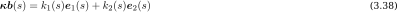

Design Process : issues and challenges
Introduction to the concept
Design process : overview
Beam model : variational approach
Beam model : equilibrium approach
New discrete beam element
Implementation & Test case
J'entre donc maintenant dans le second volet de ma présentation et vais vous présenter une première approche pour contruire un modèle de poutre avec une cinématique plus riche que le modèle à 3 degrés de liberté employé à créteil.
Previous Works
4-DOFs Kirchhoff beam model
du Peloux et al., IASS Symp., 2015
Tayeb, PhD thesis, 2015
Lefevre et al., IJSS, 2017
Discrete elastic rod
Bergou et al., ACM Transactions on Graphics, 2008
Nabaei et al., IJSS, 2013
Natural frames and the curve angle representation
Bishop, The American Mathematical Monthly, 1975
Langer & Singer, SIAM Review, 1996
Ce travail a été inité en 2013 par Frédéric Tayeb avec une forte contribution de Baptiste Lefevre.
Dans le domaine des Computeurs Graphics il y a un intérêt très fort pour la mise au point de modèles mécaniques physiques ou pseudo-physiques pour enrichir les rendus des jeux et des films d'animation, tout en gardant une vrai exigeance en terme de rapidité de calcul.
Building the model
Regardons maintenant comment nous avons construit ce premier modèle de poutre
Assumptions
Inextensibility
Cross-sections remain planar
Cross-sections remain normal to the centerline
Material deforms in the linear-elastic domaine
Le modèle est bâti sous les hypothèses suivantes, bien adaptées aux poutres élancées.
Kinematic Description
arc length > $s$
Centerline = space curve > $\mathbf{x}(s)$
Cross-section = material frame > $\{\mathbf{d}_3,\mathbf{d}_1,\mathbf{d}_2\}(s)$
Frenet Frame
Curvature $\kappa(s)$ : deviation from being a straight line
Torsion $\tau_f(s)$ : deviation from being a planar curve
Courbure et Torsion, outils fondamentales pour les courbes de l'espace.
Invariants par isométrie affine et surtout par changement de paramétrization
Introduction du vecteur binormal montrer sur le schéma
Saut de kb de pi/2 => on voit qu'il y a une information sur la torsion / la rotation du plan osculateur
Point singulier. La courbure s'annule donc n n'est plus défini. Discontinuité de tf.
Discontinuité pose un problème de définition pour une élément mécanique, pour lequels les équations sont continues
- outils
- Paramétrization par l'abscisse curviligne
- Définition des vecteurs
- Invariants
Moving Frame
There is more than one way to frame a curve [Bishop 1975]
On peut décrire l'évolution d'un repère othonormé attaché à une courbe avec seulement 3 fonctions scalaires, qui représentent les vitesses de rotation du repère autour de ses axes,
L'équation d'évolution, mise sous sa forme vectorielle, fait apparaitre le vecteur de Darboux qui s'interprète comme la vitessse angulaire instantanée du repère.
Ce que je viens de dire est vrai à une condition initiale prête, puisqu'on est en présence d'une équyation différentielle du premier ordre.
Connaissant le vecteur de Darboux au début de la courbe, en intégrant cette équation, je suis capable de le propager le long de la courbe, à tout abscisse curviligne.
Adapted Moving Frame
Adapted to the centerline
Differ only by their rate of twist ($\tau$)

Zero Twisting Frame
Frenet Frame $\{\mathbf{t},\mathbf{n},\mathbf{b}\}$ > $\tau = \tau_f$
Bishop Frame $\{\mathbf{t},\mathbf{u},\mathbf{v}\}$ > $\tau = 0$
Marial Frame $\{\mathbf{d}_3,\mathbf{d}_1,\mathbf{d}_2\}$ > $\tau = \text{rate of material twist}$
(* ) turns only whathever amount is necessary for it to remain normal, so it is as close to being parallel as possible without losing normality [Bishop 1975]
Curve-Angle Representation
3 translational DOFs : $\mathbf{x}$
1 rotational DOF : $\theta$
[Langer & Singer 1996] > [Bergou et al. 2008]
Reduced Coordinate Formulation
$\mathbf{x}\,$ and $\theta$ are independant DOFs (* )
$\kappa_1 = \mathbf{\kappa b} \cdot \mathbf{d}_1$
$\kappa_2 = \mathbf{\kappa b} \cdot \mathbf{d}_2$
$\tau = \theta'$
(* ) Since the material frames depend on the rod’s centerline and are not independent degrees of freedom [Bergou 2008]
Variational Formulation
On cherche les efforts internes quasistatics qui s'exercent sur la poutre.
On construit l'énergie élastic du système.
Et on déduit les efforts internes comme le gradient de cette énergie vis à vis des DOFs du système.
Elastic Energy
Overbars > stress-free configuration
Coupling between bending and torsion
Quasi-static out-of-balance internal forces $(\mathbf{f})$ and moments $(\mathbf{m})$
Quasistatic assumption [Bergou et al. 2008]
Internal Forces and Moments
Curvatures > bending moment
Twist > twisting moment
Variation of moment > shear force
Inextensibility > axial force
Dynamic
On a tous les éléments pour
Dynamics
Symplectic Euler integrator (* ) + Newton : [Bergou et al. 2008]
Dynamic relaxation : [Lefevre et al. 2017]
Inextensibility (reprojection vs. penalty)
Quasistatic assumption
(* ) Also known as dynamic relaxation, Verlet integration or the semi-implicit Euler, symplectic Euler, semi-explicit Euler, Euler–Cromer or Newton–Størmer–Verlet (NSV) method. [Williams 2011]
Results & Limitation
On a tous les éléments pour
Results
Model in the smooth world [Tayeb & Lefevre]
Locality of the expressions [du Peloux]
Physical meaning > Kirchhoff [du Peloux]
Limitations
Static equations only > dynamic equations ?
External distributed loads ($\mathbf{f}_{ext} \;,\;\mathbf{m}_{ext}$)
External concentrated loads ($\mathbf{F}_{ext} \;,\;\mathbf{M}_{ext}$)
Inextensibility as a stiff constraint ($\mathbf{N}$)
Lots of math to get back on simple balance equations ...
What about boundary conditions ?
Is there a more straightforward and unified approach ?